Freiwillige
Feuerwehr
Thalheim

Am 22. Jänner 2021 fand die Jahreshauptversammlung der Freiwilligen Feuerwehr Thalheim statt. Im Mittelpunkt standen die Neuwahlen des Kommandos und des Vorstands.
Kommandant Wilhelm Eigner wurde in seinem Amt bestätigt. Mehrere Kameradinnen und Kameraden wurden für ihre langjährigen Verdienste befördert und geehrt.
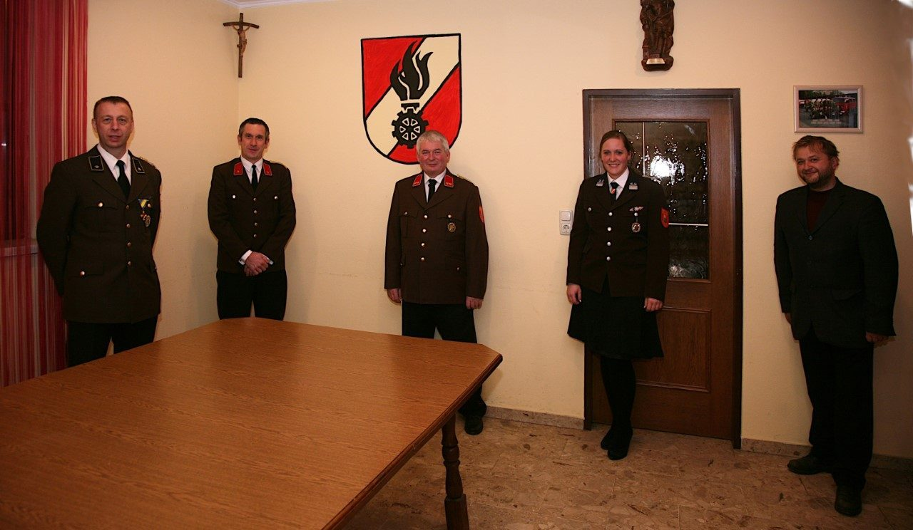
Beförderungen bei der Jahreshauptversammlung 2021
Die Grundausbildung für neue Mitglieder wurde im April 2021 erfolgreich abgeschlossen. Trotz der weiterhin gültigen COVID-19-Maßnahmen konnten alle Kurse und Übungen planmäßig durchgeführt werden.
Der gesamte Schulungsplan wurde unter strikter Einhaltung der Hygienemaßnahmen absolviert — ein Beweis für die Disziplin und den Einsatz aller Beteiligten.
Die Feuerwehr Thalheim war auch 2021 beim traditionellen Maibaumaufstellen dabei und unterstützte die Gemeinde bei diesem wichtigen Brauch.
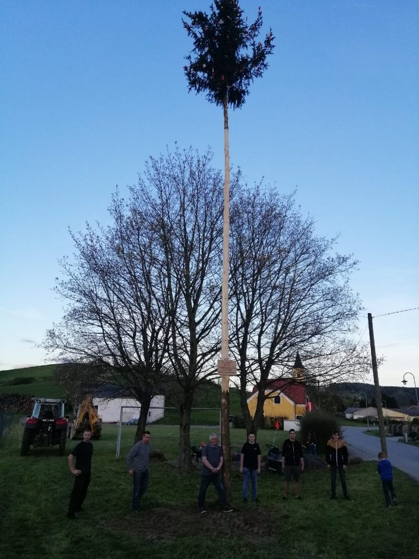
Maibaum aufstellen in Thalheim · 1. Mai 2021
Am 5. Juli fand die Unterabschnitts-Winterschulung statt. Ein besonderes Highlight war der Vortrag der Rettungshunde Niederösterreich mit anschließender praktischer Demonstration.
Die Zusammenarbeit mit dem Rettungshunde-Team zeigte wertvolle Möglichkeiten für zukünftige gemeinsame Einsätze auf.
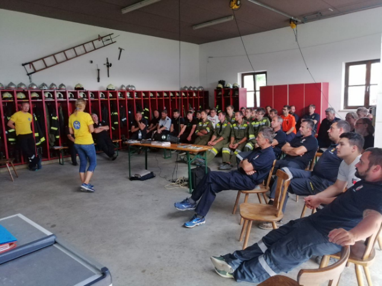
Vortrag der Rettungshunde Niederösterreich im Schulungsraum
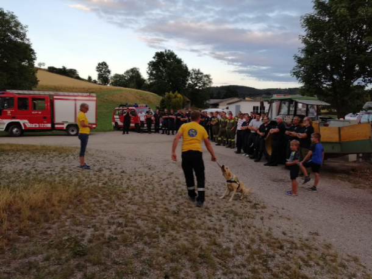
Praktische Demonstration mit Rettungshund · Juli 2021
Im Sommer 2021 fand die Verleihung des Feuerwehr-Leistungsabzeichens statt. Mehrere Kameradinnen und Kameraden wurden für ihre bestandenen Prüfungen und langjährigen Verdienste ausgezeichnet.
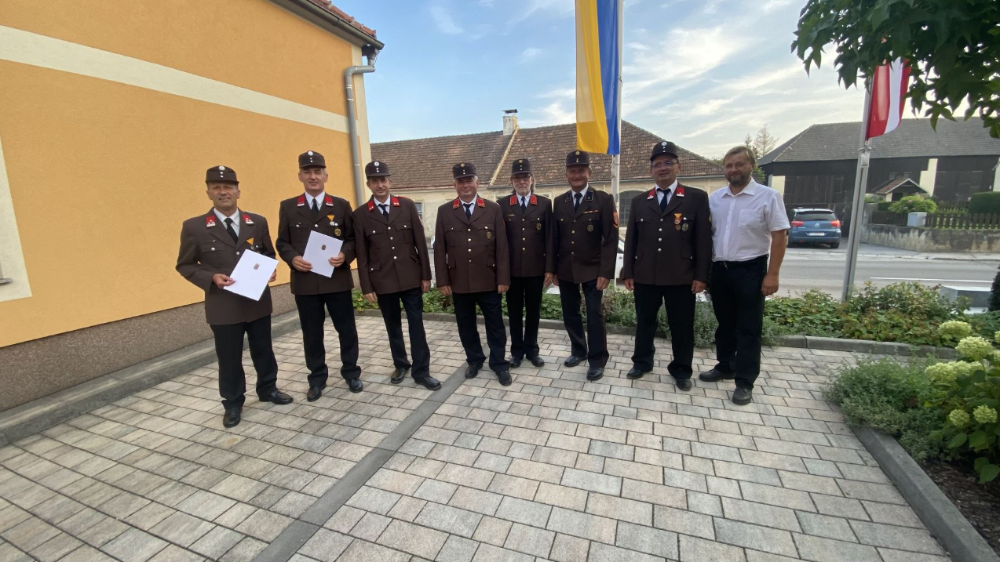
Ehrung und Leistungsabzeichen-Verleihung · Sommer 2021
In den Nachtstunden des 9. Oktober wurde eine intensive Tunnelübung abgehalten. Alle Einsatzgeräte wurden dabei einer vollständigen Funktionalitätsprüfung unterzogen.
Die Übung forderte die Kameradinnen und Kameraden in einer realistischen Einsatzsimulation unter schwierigen Sichtbedingungen — eine wertvolle Erfahrung für den Ernstfall.
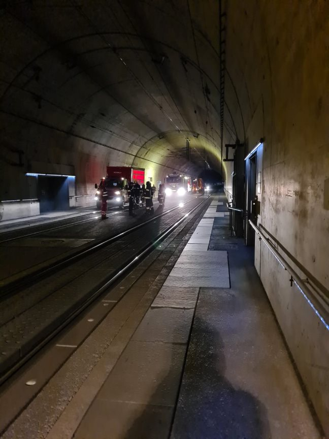
Tunnelübung · Oktober 2021
Innenansicht während der Übung
Am 12. November wurde die FF Thalheim zu einem Tierrettungseinsatz alarmiert. Ein Hornissennest musste fachgerecht und sicher entfernt werden.
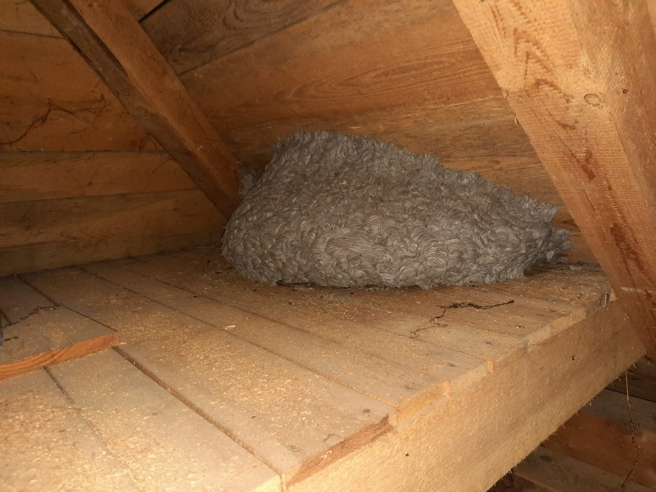
Das entfernte Hornissennest · November 2021
Im Herbst 2021 fand eine offizielle Beförderungsfeier statt. Der Kommandant überreichte die Ernennungsurkunden im Rahmen einer feierlichen Zeremonie im Freien.
Urkundenübergabe durch den Kommandanten · Herbst 2021
Das Gerätehaus der FF Thalheim wurde einer umfassenden Generalsanierung unterzogen. Der Umbau umfasste eine vollständige Modernisierung der Infrastruktur und verbessert die Arbeitsbedingungen für alle Mitglieder.

Gerätehaus der FF Thalheim mit Einsatzfahrzeugen


Um 04:59 Uhr wurden wir zu einem Einsatz im Schloss Thalheim gerufen. Nach dem Auslesen der Brandmeldeanlage wurde der auslösende Brandmelder gefunden und gereinigt — Fehlalarm festgestellt. Um 06:20 Uhr konnte wieder Einsatzbereitschaft gemeldet werden.
Um 08:53 Uhr zu einem Verkehrsunfall alarmiert. Die Unfallstelle wurde abgesichert und das Fahrzeug mit Hilfeleistung geborgen. Um 10:06 Uhr wieder Einsatzbereitschaft.
Im Zuge einer technischen Übung wurde der Teich in Pönning zur bevorstehenden Sanierung ausgepumpt.
Die aufgrund der COVID-Situation verschobene Jahreshauptversammlung wurde am 18. März unter den geltenden Vorgaben abgehalten. Beförderungen: Stefan Puxbaum zum Oberlöschmeister (OLM), Stefan Eigner zum Löschmeister (LM).
Am 21. Jänner fand die Jahreshauptversammlung wieder im Gasthaus Nährer in Rassing statt. Da Altkommandant OBI Wilhelm Eigner sein Amt wie intern abgestimmt zur Verfügung gestellt hatte, kam es zur außertourlichen Neuwahl des Kommandanten: Ing. Reinhard Scheriau wurde einstimmig zum neuen Kommandanten der FF-Thalheim gewählt und zum Oberbrandinspektor (OBI) ernannt.
Als seine erste Amtshandlung durfte Scheriau seinen Vorgänger Wilhelm Eigner zum Ehrenoberbrandinspektor (EOBI) ernennen. Im Zuge der JHV wurden außerdem die Jungfeuerwehrmänner Florian Leisser, Elias Rödl und Jakob Wandl feierlich angelobt sowie Lukas Habersatter zum Löschmeister (LM) befördert.
Jahreshauptversammlung 2023 im Gasthaus Nährer, Rassing
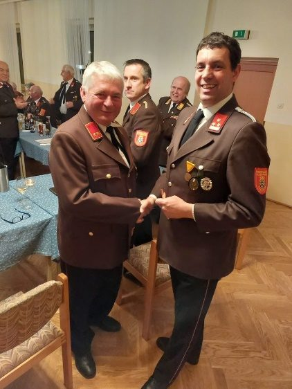
Angelobung: Florian Leisser, Elias Rödl und Jakob Wandl
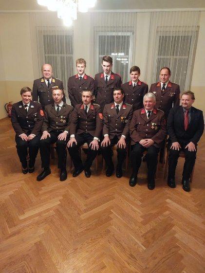
Ernennung von Wilhelm Eigner zum Ehrenoberbrandinspektor (EOBI)
In den ersten Monaten des Jahres wurden bereits mehrere Übungen gemäß dem internen Übungsplan abgehalten. Die Schwerpunkte lagen auf dem Funkwesen sowie den Bereichen Atemschutz und taktisches Vorgehen im Einsatzfall. Zahlreiche Kameradinnen und Kameraden besuchten darüber hinaus Schulungen außerhalb der Wehr.
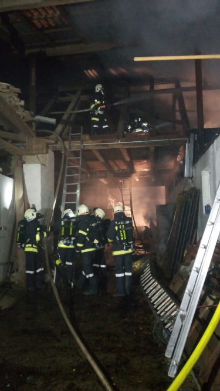
Taktische Übung der FF Thalheim · Frühjahr 2023
Zu Ehren des neuen Kommandanten Oberbrandinspektor Ing. Reinhard Scheriau wurde am 30. April ein Maibaum am Sportplatz der FF-Thalheim aufgestellt. Als Dankeschön lud der Kommandant am 1. Mai alle Kameradinnen und Kameraden mit ihren Partnern sowie langjährige Unterstützer der Wehr zu einem gemütlichen Mittagessen ins FF-Haus ein.
Bei diesem Anlass wurde dem Altkommandanten EOBI Wilhelm Eigner zu seinem 60. Geburtstag herzlich gratuliert und ihm als Anerkennung für die jahrelange Tätigkeit ein Floriani überreicht.

Maibaum für Kommandant Scheriau am Sportplatz · 30. April 2023
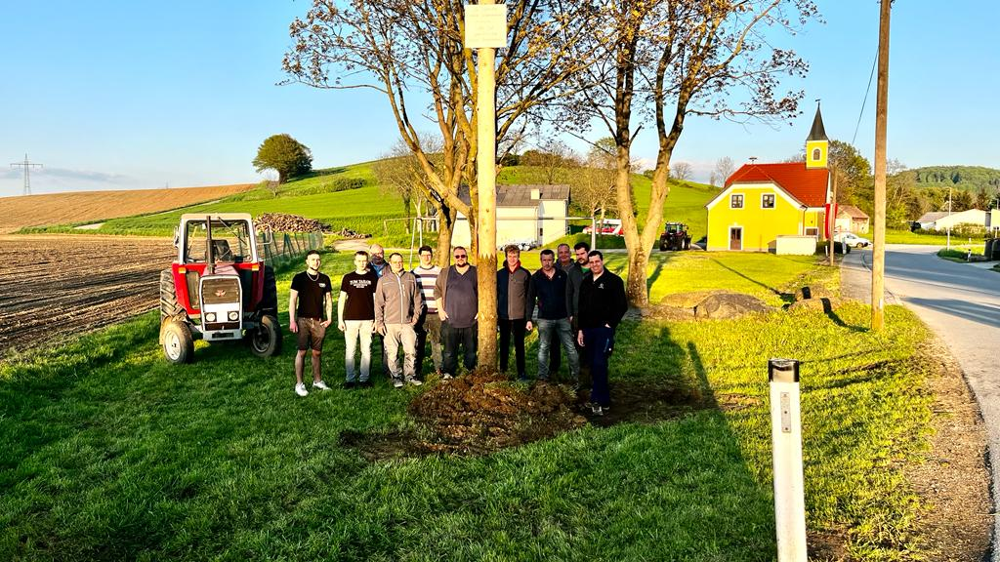
Ehrung von EOBI Wilhelm Eigner zum 60. Geburtstag
Am Samstag, den 6. Mai fand in Murstetten die traditionelle Florianimesse statt. Nach einem gemeinsamen Kirchgang der Feuerwehren Murstetten und Thalheim wurden die Kameradinnen und Kameraden beider Feuerwehren zu einer Jause ins FF-Haus Murstetten eingeladen.
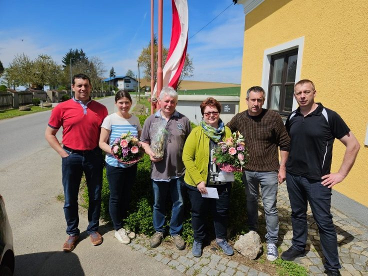
Florianimesse Murstetten · 6. Mai 2023
In den Wochen nach der Florianimesse wurden gemäß Übungsplan mehrere taktische und technische Übungen durchgeführt. Dabei wurden der Umgang mit Atemschutz und Funk geübt sowie die Hydranten im gesamten Einsatzgebiet auf Funktion überprüft. Zusätzlich wurden die Notausstiege der Hochleistungsbahn (HL-Bahn) in der Zuständigkeit der Wehr beprobt.
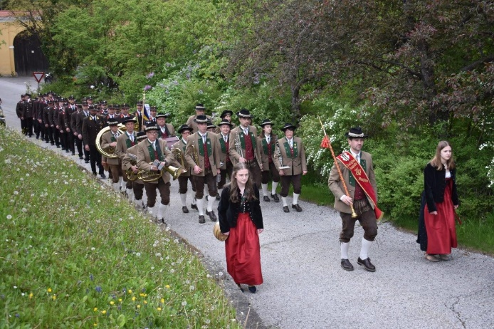
Übung an den Notausstiegen der HL-Bahn
Mitten aus den Vorbereitungen zum alljährlichen FF-Fest wurden die Kameradinnen und Kameraden am 5. August um 12:15 Uhr zu einem B3-Scheunenbrand in Pönning gerufen. Erst um 18:00 Uhr konnte die Wehr wieder ins FF-Haus einrücken und Einsatzbereitschaft melden — ein eindrucksvoller Beweis für die Bedeutung regelmäßiger Übungen und Schulungen.

Einsatz B3 Scheunenbrand in Pönning · 5. August 2023
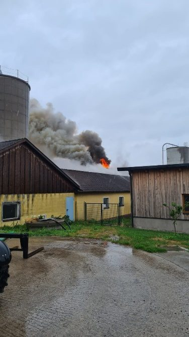
Löscharbeiten beim Scheunenbrand · Pönning 2023
Von 11. bis 13. August durfte die FF Thalheim ihr allseits beliebtes Feuerwehrfest abhalten und dabei wieder zahlreiche Gäste begrüßen. Das dreitägige Fest ist seit Jahren ein fixer Bestandteil des Gemeinschaftslebens in Thalheim.
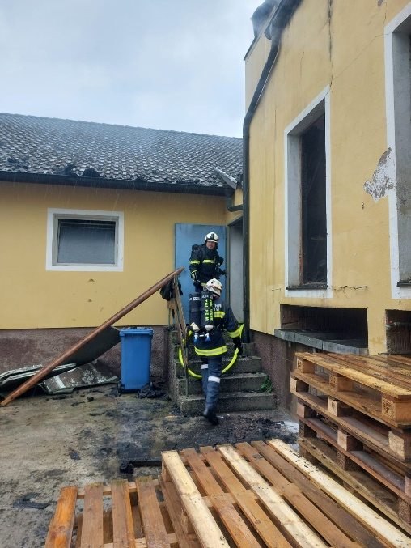
FF-Fest Thalheim · 11.–13. August 2023
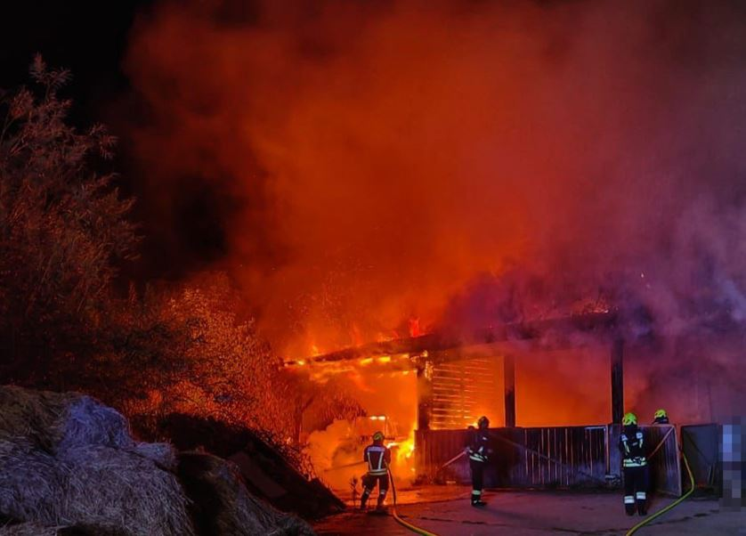
Gemütliche Stimmung beim Feuerwehrfest
Am Sonntag, den 20. August wurden die Kameradinnen und Kameraden in den Abendstunden zu einem B3-Dachstuhlbrand nach Rapoltendorf gerufen. In Zusammenarbeit mit den Nachbarwehren konnte der Brand bekämpft werden. Um 23:05 Uhr war die Wehr wieder einsatzbereit.
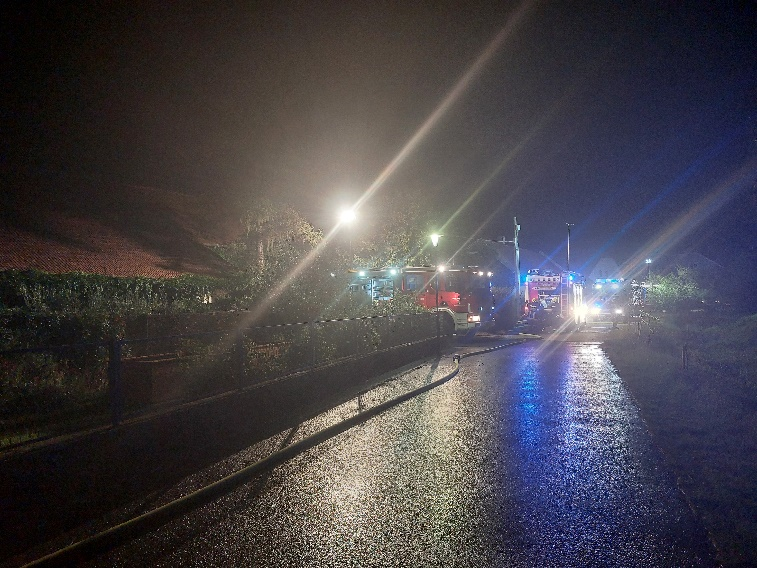
Einsatz B3 Dachstuhlbrand Rapoltendorf · 20. August 2023
Am 26. September konnte die FF Thalheim die Hochzeit von Kamerad Simon Kaiblinger mit seiner Alina feiern. Die gesamte Wehr gratuliert dem Brautpaar noch einmal sehr herzlich und wünscht den beiden Gesundheit und viele schöne gemeinsame Jahre.
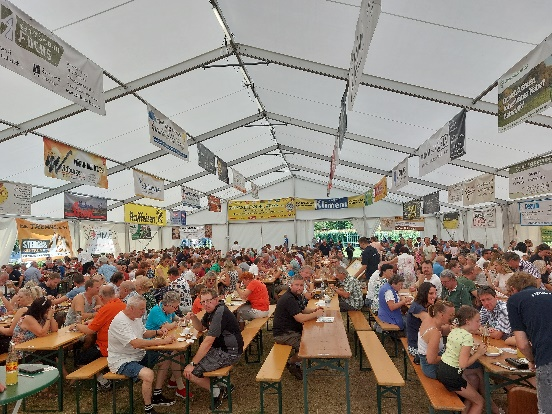
Hochzeit Simon & Alina Kaiblinger · 26. September 2023
Um 08:27 Uhr wurden wir zu einer Bergung eines landwirtschaftlichen Fahrzeugs nach Wiesen gerufen. Das Güllefass wurde von dem umgestürzten Traktor getrennt und von der Unfallstelle abtransportiert. Anschließend wurde der Traktor mithilfe eines zur Unterstützung gerufenen Krans aufgestellt und abtransportiert. Glücklicherweise wurde bei diesem Einsatz niemand verletzt.
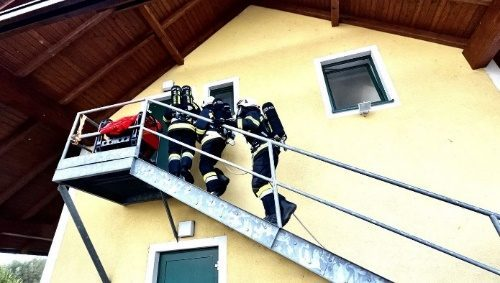
Fahrzeugbergung in Wiesen · 30. September 2023
Am 6. Oktober wurden wir um 21:00 Uhr zu einem Verkehrsunfall in Thalheim mit einer eingeklemmten Person gerufen. Beim Eintreffen am Einsatzort mussten wir feststellen, dass es sich bei der verunfallten Person um einen unserer Kameraden handelte. Trotz sofort eingeleiteter Wiederbelebungsmaßnahmen konnte unser Kamerad nicht mehr gerettet werden und verstarb noch an der Einsatzstelle.
Wir gedenken unserem Kameraden in Würde und Dankbarkeit für seinen langjährigen Dienst an der Gemeinschaft.
Um 20:56 Uhr wurde die Wehr zu einem Brandalarm ins Schloss Thalheim gerufen. Nach dem Auslesen der Brandmeldeanlage (BMA) und der Kontrolle des entsprechenden Brandmelders konnte festgestellt werden, dass kein Brand vorlag — der Melder war durch eine offene Saunatür ausgelöst worden. Fehlalarm.
Im Herbst standen wieder mehrere Übungen am Plan. Die Kameradinnen und Kameraden nahmen an der Unterabschnittsatemschutzübung in Perschling und an der Unterabschnittsübung in Rassing teil. Darüber hinaus wurden auch mehrere interne Übungen abgehalten, darunter die Beprobung der Gerätschaften an den Notausstiegen der HL-Bahn.
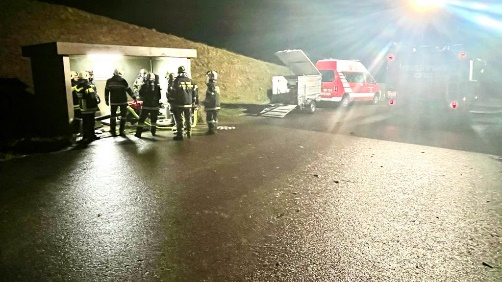
Unterabschnittsübung · Herbst 2023
Am 3. Dezember wurden wir um 06:38 Uhr zu einem technischen Einsatz gerufen. Aufgrund heftigen Schneefalls und anschließender Verwehungen war eine Lenkerin mit ihrem PKW in der Nähe von Pönning in eine Notsituation geraten und musste aus dieser befreit werden.
Fast schon traditionell nach dem Einsatz am Heiligen Abend 2022 wurden die Kameraden auch am 24. Dezember 2023 wieder gerufen — diesmal zu einem technischen Einsatz. In den frühen Morgenstunden um 05:20 Uhr musste in Thalheim aufgrund heftiger Sturmböen ein auf die Fahrbahn gefallenes Telefonkabel entfernt und provisorisch am Mast befestigt werden.
Inhalte werden noch ergänzt.
Inhalte werden noch ergänzt.
Inhalte werden noch ergänzt.